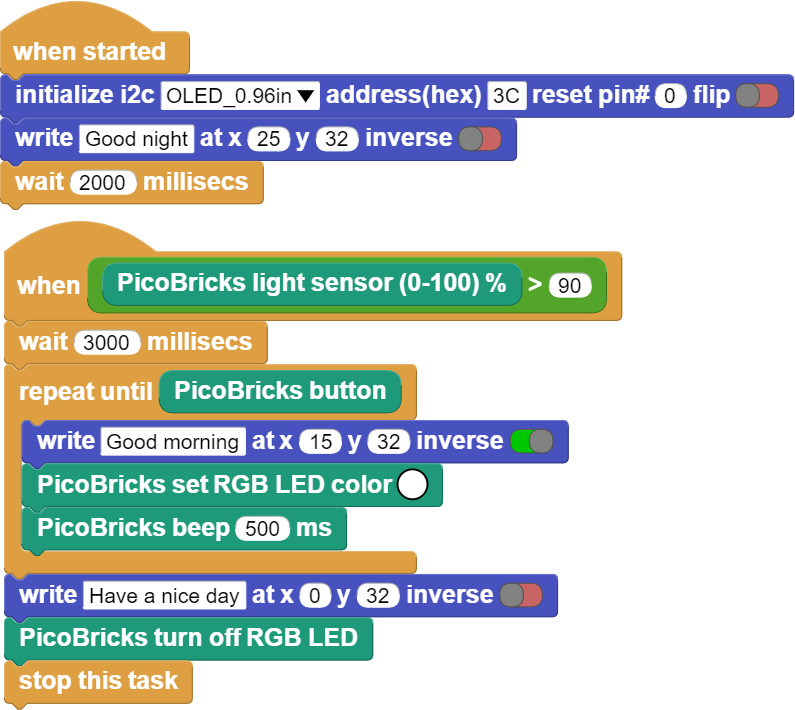

Alarm Clock¶
Introduction¶
In this project, we will create a timer alarm that adjusts for daylight using the light sensor in Picobricks. In this project we will make a simple alarm application. The alarm system we will design is designed to sound automatically in the morning. For this, we will use LDR sensor in the project.
Project Details and Algorithm¶
Global warming is affecting the climate of our world worse every day. Countries take many precautions and sign agreements to reduce the effects of global warming. The use of renewable energy sources and the efficient use of energy is an issue that needs attention everywhere, from factories to our rooms. Many reasons such as keeping road and park lighting on in cities due to human error, and the use of high energy consuming lighting tools reduce energy efficiency. Many electronic and digital systems are developed and programmed by engineers to measure the light, temperature and humidity values of the environment and ensure that they are used only when needed and in the right amounts.
At night, the OLED screen will display a good night message to the user, in the morning, an alarm will sound with a buzzer sound, a good morning message will be displayed on the screen, and the RGB LED will light up in white for light notification. The user will have to press the button of Picobricks to stop the alarm. After these processes, which continue until the alarm is stopped, when the button is pressed, the buzzer and RGB LED will turn off and a good day message will be displayed on the OLED screen.
Wiring Diagram¶


You can program and run Picobricks modules without any wiring. If you are going to use the modules by separating them from the board, then you should make the module connections with the Grove cables provided.
MicroPython Code of the Project¶
from machine import Pin, I2C, ADC, PWM#to access the hardware on the pico
from picobricks import SSD1306_I2C#OLED Screen Library
import utime
from picobricks import WS2812#ws8212 library
#OLED Screen Settings
WIDTH = 128
HEIGHT = 64
sda=machine.Pin(4)
scl=machine.Pin(5)
#initialize digital pin 4 and 5 as an OUTPUT for OLED Communication
i2c=machine.I2C(0,sda=sda, scl=scl, freq=1000000)
neo = WS2812(pin_num=6, num_leds=1, brightness=0.3)#initialize digital pin 6 as an OUTPUT for NeoPixel
oled = SSD1306_I2C(WIDTH, HEIGHT, i2c)
ldr = ADC(Pin(27))#initialize digital pin 6 as an OUTPUT for NeoPixel
button = Pin(10,Pin.IN,Pin.PULL_DOWN)#initialize digital pin 10 as an INPUT for button
buzzer = PWM(Pin(20, Pin.OUT))#initialize digital pin 20 as an OUTPUT for buzzer
buzzer.freq(1000)
BLACK = (0, 0, 0)
WHITE = (255, 255, 255)
#RGB black and white color code
oled.fill(0)
oled.show()
neo.pixels_fill(BLACK)
neo.pixels_show()
if ldr.read_u16()<4000:
wakeup = True
else:
wakeup = False
while True:
while wakeup==False:
oled.fill(0)
oled.show()
oled.text("Good night",25,32)
oled.show()
#Show on OLED and print "Good night"
utime.sleep(1)
if ldr.read_u16()<4000:
while button.value()==0:
oled.fill(0)
oled.show()
oled.text("Good morning",15,32)
oled.show()
#Print the minutes, seconds, milliseconds and "Goog morning" values to the X and Y coordinates determined on the OLED screen.
neo.pixels_fill(WHITE)
neo.pixels_show()
buzzer.duty_u16(6000)
utime.sleep(1)
#wait for one second
buzzer.duty_u16(0)
utime.sleep(0.5)
#wait for half second
wakeup=True
neo.pixels_fill(BLACK)
neo.pixels_show()
oled.fill(0)
oled.show()
oled.text("Have a nice day!",0,32)
#Print the minutes, seconds, milliseconds and "Have a nice day!" values to the X and Y coordinates determined on the OLED screen.
oled.show()
if ldr.read_u16()>40000:
wakeup= False
utime.sleep(1)
#wait for one second
Truco
Ifyou rename your code file to main.py, your code will run after every boot.
Arduino C Code of the Project¶
#include <Adafruit_NeoPixel.h>
#ifdef __AVR__
#include <avr/power.h>
#endif
#define PIN 6
#define NUMPIXELS 1
Adafruit_NeoPixel pixels(NUMPIXELS, PIN, NEO_GRB + NEO_KHZ800);
#include <Wire.h>
#include "ACROBOTIC_SSD1306.h"
int button;
void setup() {
// put your setup code here, to run once:
Wire.begin();
oled.init();
oled.clearDisplay();
#if defined(__AVR_ATtiny85__) && (F_CPU == 16000000)
clock_prescale_set(clock_div_1);
#endif
pinMode(10,INPUT);
pinMode(27,INPUT);
pinMode(20,OUTPUT);
pixels.begin();
pixels.setPixelColor(0, pixels.Color(0, 0, 0));
pixels.show();
}
void loop() {
// put your main code here, to run repeatedly:
oled.setTextXY(4,3);
oled.putString("Good night");
if (analogRead(27)<200){
while(!(button == 1)){
button=digitalRead(10);
oled.setTextXY(4,2);
oled.putString("Good morning");
pixels.setPixelColor(0, pixels.Color(255, 255, 255));
pixels.show();
tone(20,494);
}
oled.clearDisplay();
oled.setTextXY(4,1);
oled.putString("Have a nice day");
noTone(20);
pixels.setPixelColor(0, pixels.Color(0, 0, 0));
pixels.show();
delay(10000);
}
}
Coding the Project with MicroBlocks¶
 |
Nota
To code with MicroBlocks, simply drag and drop the image above to the MicroBlocks Run tab.